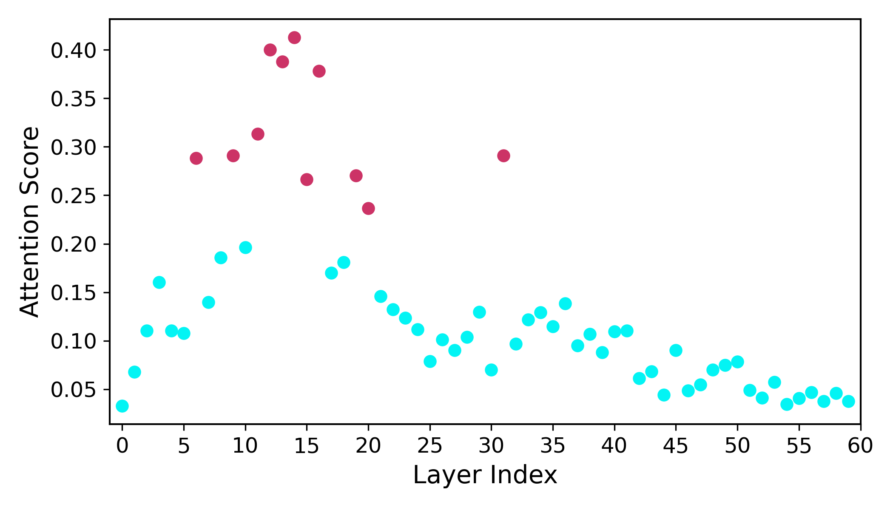
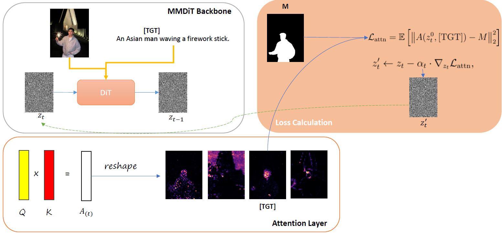

We evaluate our method on 60 online videos. We report DAVIS benchmark metrics to measure mask alignment quality, and we additionally compute a VQA score to assess text–video semantic accuracy.
Abstract
We present CoMoGen, a controllable video generation framework that generates realistic interactive dynamics from a single binary mask sequence conditioned on an input image. CoMoGen introduces a lightweight MaskAdapter that encodes binary mask sequences into a latent residual signal, injected into the Multi-Modal Diffusion Transformer (MMDiT) model through a cosine-weighted schedule. Unlike the hierarchical coarse-to-fine design of UNet architectures, MMDiT operates as a sequence of uniform transformer blocks, making it difficult to identify which layers are responsible for the motion generation. Therefore, we propose a novel way to determine "\layer" operating in the attention space of MMDiT. We fine-tune the model by using Low-Rank Adaptation (LoRA) to the \layer, without requiring any architecture change in the MMDiT. This selective adaptation enables our method to focus on motion-critical components, yielding reduced computational cost. Despite its simplicity, CoMoGen enables precise subject motion and physically plausible interactions with surrounding humans, objects, and scenes. Comprehensive experiments on different datasets, show that CoMoGen consistently outperforms prior controllable video generation methods and achieves state-of-the-art performance in motion fidelity and perceptual realism. Code will be released based on acceptance.
Results
Layer Analysis
Attention Visualization
Attention Score Analysis


| VQA Score | |
|---|---|
| Generated Video | 0.4540 |
| Motion Layers | 0.2742 |
| Non Motion Layers | 0.4068 |
| DAVIS Metrics | J-Mean | J-Recall | J-Decay | F-Mean | F-Recall | F-Decay | J&F | HOTA |
|---|---|---|---|---|---|---|---|---|
| Motion Layers | 60.161 | 71.020 | 26.614 | 59.984 | 63.435 | 29.584 | 60.073 | 57.332 |
| Non Motion Layers | 77.768 | 91.156 | 17.726 | 81.133 | 88.844 | 19.297 | 79.451 | 82.313 |
Generated Video
Skip Motion Layers
Skip Non-Motion Layers
Training Free Method
Calculating gradients from the Motion Layers and iteratively updating the input noise, we can generate videos without any training.

Reference Mask
Generation 1
Generation 2
Generation 3